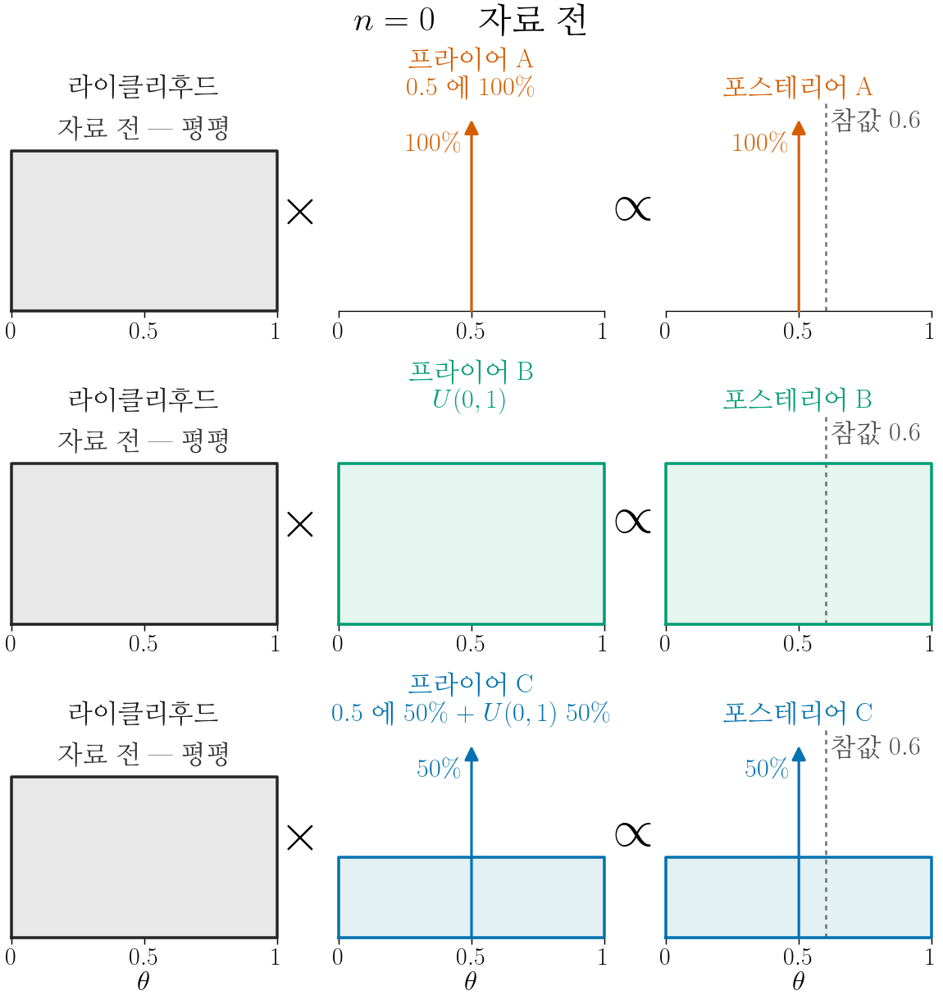
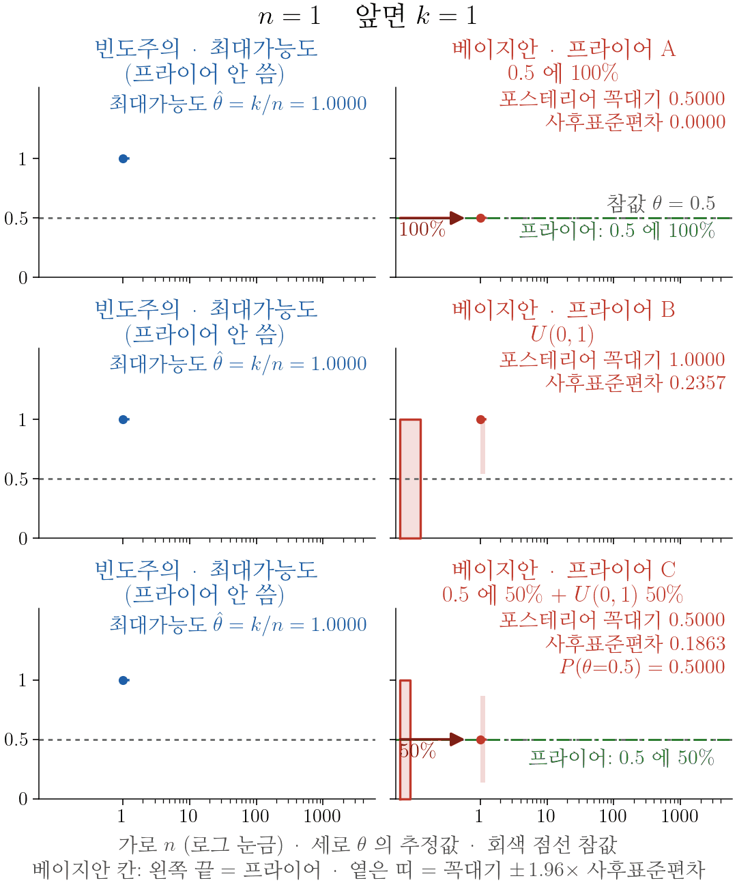
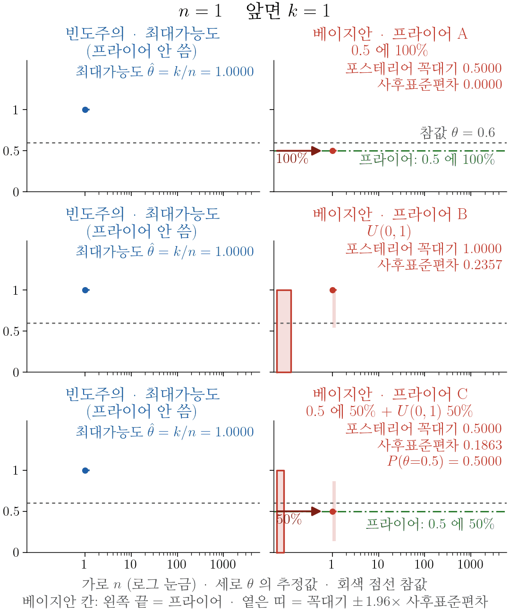
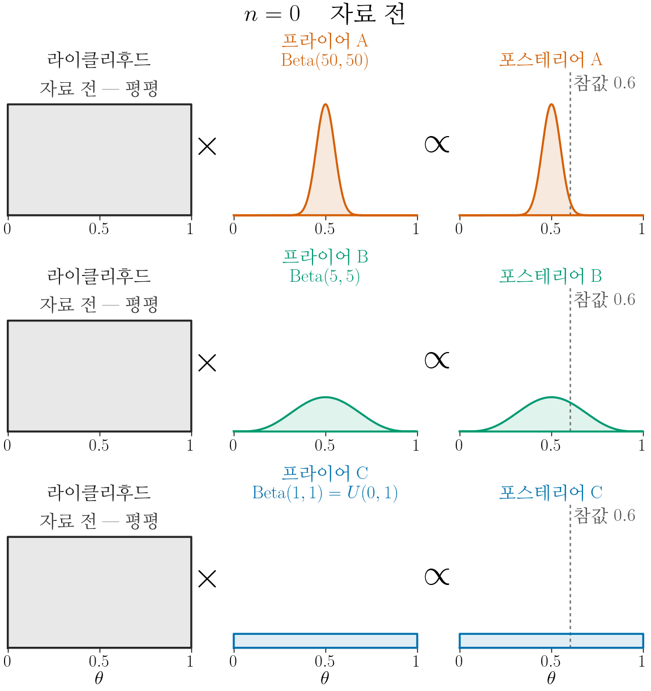
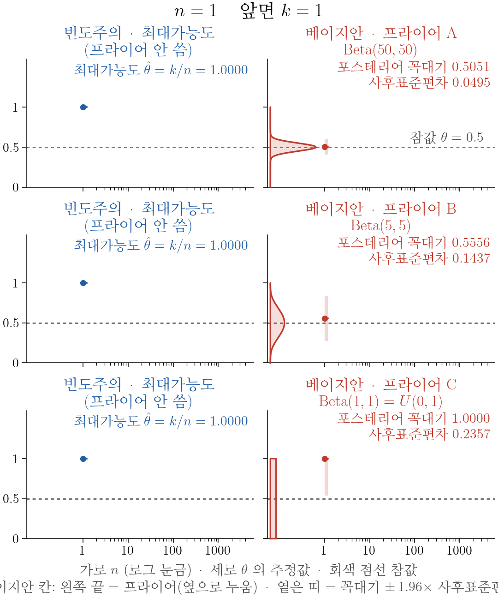
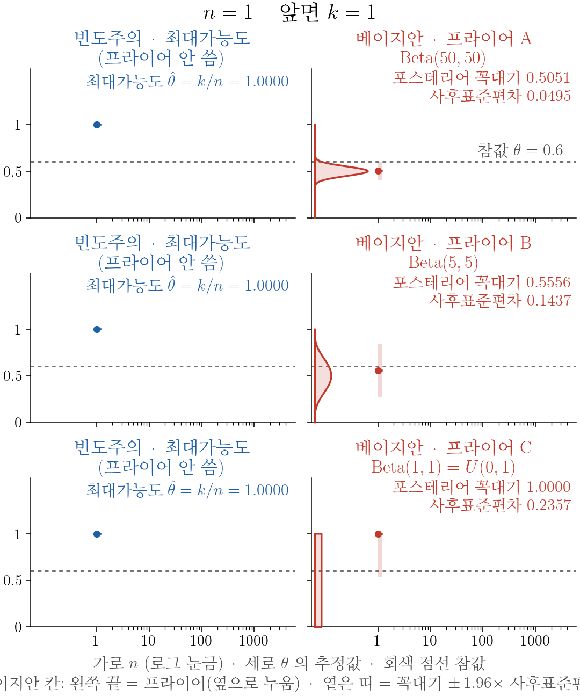

10wk-2(2): 베이지안식 해석 (1)
1. 강의영상
2. 베이지안 특징
- 모수를 확률변수로 본다.
- “더 진실의 세계 (하이퍼파라미터) → 진실의 세계 (파라미터) → 데이터의 세계 (데이터)” 이런 구조로 본다.
- 반론: “더 진실의 세계 (하이퍼파라미터) → 진실의 세계 (파라미터)” 이걸 반복 관찰할 수가 없는데 확률이라는 말을 써도 돼요?
- 확률의 정의를 생각해보세요.
- 확률을 빈도로 보는 건 해석의 문제예요. 확률의 정의상 빈도가 아니라고 해서 확률이 아니라고 주장할 순 없어요.
3. 사전분포, 가능도, 사후분포
- 용어 정리
- 사전분포 = 프라이어 = prior: \(\pi(\theta)\)
- 사후분포 = 포스테리어 = posterior: \(\pi(\theta\mid\text{data})\)
- 가능도 = 라이클리후드 = likelihood: \(L(\theta)\)
- 외우세요: 사후분포 \(\propto\) 사전분포 × 가능도
\[\underbrace{\pi(\theta\mid\text{data})}_{\text{사후분포}}\ \propto\ \underbrace{\pi(\theta)}_{\text{사전분포}}\times\underbrace{L(\theta)}_{\text{가능도}}\]
- 사전분포(prior) \(\pi(\theta)\): 자료를 보기 전에 \(\theta\) 에 준 분포다.
- 가능도(likelihood) \(L(\theta)=P(\text{data}\mid\theta)\): 예전에배운 그것 그대로다.
- 사후분포(posterior) \(\pi(\theta\mid\text{data})\): 사전분포 × 가능도를 정규화한 것이다. 곧 사전분포와 가능도를 곱한 뒤, 전체가 1이 되도록 나눈 것이다. \(\propto\) 는 “나누는 것만 빼고 같다”는 뜻이다.
- \(\theta\) 가 이산형이면 합으로 나눈다.
\[\pi(\theta\mid\text{data})=\frac{\pi(\theta)\,L(\theta)}{\sum_{\theta'}\pi(\theta')\,L(\theta')}\]
- \(\theta\) 가 연속형이면 적분으로 나눈다.
\[\pi(\theta\mid\text{data})=\frac{\pi(\theta)\,L(\theta)}{\int\pi(\theta')\,L(\theta')\,d\theta'}\]
- 둘이 섞여 있으면(혼합형) 한 점에 놓인 부분은 더하고 퍼진 부분은 적분해서, 그 둘을 합한 것으로 나눈다(예제1 의 (3)).
# 예제1 – 동전 던지기: 사전분포 셋
동전을 던져 앞면이면 1, 뒷면이면 0 으로 적는다. \(X\sim Ber(\theta)\) 이고, \(\theta\) 는 앞면이 나올 확률이다. 동전을 \(n=10\)번 던져 자료 \(x_1,\dots,x_{10}\) 을 얻었고, 앞면이 6번 나왔다(\(\sum_{i=1}^{10}x_i=6\)). 사전분포를 세 가지로 두고 각각 풀어 보자. 풀이는 다섯 걸음이다: Step1 사전분포, Step2 가능도, Step3 곱, Step4 적분, Step5 사후분포. (아래에서 \(\sum x_i\) 는 \(\sum_{i=1}^{n}x_i\) 다.)
- 사전분포 A: 동전이니까 \(\theta=0.5\) 다. 100% 확신한다. 사후분포의 최대값으로 \(\theta\) 를 추정하라.
(풀이)
Step1 사전분포: \(P(\theta=0.5)=1\)
Step2 가능도: 자료 \(x_1,\dots,x_n\) 이 나올 확률이다.
\[L(\theta)=P(X_1=x_1,\dots,X_n=x_n\mid\theta)=\prod_{i=1}^{n}\theta^{x_i}(1-\theta)^{1-x_i}=\theta^{\sum x_i}(1-\theta)^{n-\sum x_i}\]
Step3 곱:
\[\pi(\theta)\times L(\theta)=\begin{cases}1\times0.5^{\sum x_i}(1-0.5)^{n-\sum x_i}=0.5^{n} & (\theta=0.5)\\ 0 & (\text{그 외})\end{cases}\]
Step4 적분: \(\theta\) 가 \(0.5\) 한 점뿐이라 적분이 아니라 합이고, 더할 것도 하나다. 값은 \(0.5^{n}\) 이다.
Step5 사후분포: \(P(\theta=0.5\mid\text{data})=\frac{0.5^{n}}{0.5^{n}}=1\) → 최대값 \(\theta=0.5\). 자료가 무엇이든 추정값은 \(0.5\) 다.
- 사전분포 B: 그냥 모르겠다. 사후분포의 최대값으로 \(\theta\) 를 추정하라.
(풀이)
Step1 사전분포: \(\pi(\theta)=1\quad(0<\theta<1)\)
Step2 가능도: (1) 과 같다. \(L(\theta)=\theta^{\sum x_i}(1-\theta)^{n-\sum x_i}\)
Step3 곱: \(\pi(\theta)\times L(\theta)=\theta^{\sum x_i}(1-\theta)^{n-\sum x_i}\)
Step4 적분: \(\int_0^1\theta^{\sum x_i}(1-\theta)^{n-\sum x_i}\,d\theta\) 를 구해야 한다. 지수가 자료에 따라 바뀌므로 어떤 자료에도 통하는 식으로 구한다. 적기 편하게 \(k=\sum x_i\) (앞면이 나온 횟수) 라 쓰자. 부분적분(\(u=(1-\theta)^{n-k}\), \(dv=\theta^{k}\,d\theta\))을 하면
\[\int_0^1\theta^{k}(1-\theta)^{n-k}\,d\theta=\underbrace{\Big[\frac{\theta^{k+1}}{k+1}(1-\theta)^{n-k}\Big]_0^1}_{=0}+\frac{n-k}{k+1}\int_0^1\theta^{k+1}(1-\theta)^{n-k-1}\,d\theta\]
이다. \(\theta\) 의 지수는 하나 늘고 \(1-\theta\) 의 지수는 하나 줄었다. \(1-\theta\) 의 지수가 \(0\) 이 될 때까지 이것을 \(n-k\) 번 되풀이한다.
\[ \begin{aligned} \int_0^1\theta^{k}(1-\theta)^{n-k}\,d\theta &=\frac{n-k}{k+1}\int_0^1\theta^{k+1}(1-\theta)^{n-k-1}\,d\theta\\ &=\frac{n-k}{k+1}\cdot\frac{n-k-1}{k+2}\int_0^1\theta^{k+2}(1-\theta)^{n-k-2}\,d\theta\\ &=\frac{n-k}{k+1}\cdot\frac{n-k-1}{k+2}\cdot\frac{n-k-2}{k+3}\int_0^1\theta^{k+3}(1-\theta)^{n-k-3}\,d\theta\\ &\ \ \vdots\\ &=\frac{n-k}{k+1}\cdot\frac{n-k-1}{k+2}\cdots\frac{1}{n}\int_0^1\theta^{n}\,d\theta\\ &=\frac{(n-k)(n-k-1)\cdots1}{(k+1)(k+2)\cdots n}\cdot\frac{1}{n+1}\\ &=\frac{(n-k)!\,k!}{n!}\cdot\frac{1}{n+1}\\ &=\frac{k!\,(n-k)!}{(n+1)!} \end{aligned} \]
곧 \(\int_0^1\theta^{\sum x_i}(1-\theta)^{n-\sum x_i}\,d\theta=\frac{(\sum x_i)!\,(n-\sum x_i)!}{(n+1)!}\) 이다. 자료(\(n=10\), \(\sum x_i=6\))를 넣으면 \(\frac{6!\,4!}{11!}=\frac{720\times24}{39916800}=\frac{1}{2310}\) 이다. Step1~3 은 적고 곱하기만 하면 되는데, Step4 는 부분적분을 \(n-\sum x_i\) 번 해야 한다.
Step5 사후분포: Step3 을 Step4 로 나눈다.
\[\pi(\theta\mid\text{data})=\frac{(n+1)!}{(\sum x_i)!\,(n-\sum x_i)!}\,\theta^{\sum x_i}(1-\theta)^{n-\sum x_i},\quad\text{곧 } Beta\Big(\sum x_i+1,\ n-\sum x_i+1\Big)\]
최대값은 로그를 취해 미분한 \(\frac{\sum x_i}{\theta}-\frac{n-\sum x_i}{1-\theta}=0\) 에서 \(\theta=\frac{\sum x_i}{n}=\bar{x}\) 다. 자료를 넣으면 \(\pi(\theta\mid\text{data})=2310\,\theta^{6}(1-\theta)^{4}\), 곧 \(Beta(7,5)\) → 최대값 \(\theta=\frac{6}{10}\), 추정값 \(0.6\)
- 사전분포 C: 50% 는 \(\theta=0.5\) 라고 확신하고, 나머지 50% 는 다른 값일 수도 있다고 생각한다. 사후분포의 최대값으로 \(\theta\) 를 추정하라.
(풀이)
Step1 사전분포: \(P(\theta=0.5)=0.5\), 나머지는 밀도 \(0.5\) (\(0<\theta<1\))
Step2 가능도: (1) 과 같다. \(L(\theta)=\theta^{\sum x_i}(1-\theta)^{n-\sum x_i}\)
Step3 곱: 한 점 \(0.5\times L(0.5)=0.5\times0.5^{n}=0.5^{n+1}\), 퍼진 부분 \(0.5\,\theta^{\sum x_i}(1-\theta)^{n-\sum x_i}\)
Step4 적분: 한 점은 더하고 퍼진 부분은 적분한다. 퍼진 부분의 적분은 (2) 의 Step4 를 그대로 쓴다.
\[0.5^{n+1}+0.5\int_0^1\theta^{\sum x_i}(1-\theta)^{n-\sum x_i}\,d\theta=0.5^{n+1}+0.5\times\frac{(\sum x_i)!\,(n-\sum x_i)!}{(n+1)!}\]
자료를 넣으면 \(0.5^{11}+0.5\times\frac{1}{2310}=0.000488+0.000216=0.000704\) 다.
Step5 사후분포: Step3 을 Step4 로 나눈다.
\[P(\theta=0.5\mid\text{data})=\frac{0.5^{n+1}}{0.5^{n+1}+0.5\times\frac{(\sum x_i)!\,(n-\sum x_i)!}{(n+1)!}},\qquad\text{퍼진 부분}=\frac{0.5\,\theta^{\sum x_i}(1-\theta)^{n-\sum x_i}}{0.5^{n+1}+0.5\times\frac{(\sum x_i)!\,(n-\sum x_i)!}{(n+1)!}}\]
자료를 넣으면 \(P(\theta=0.5\mid\text{data})=\frac{0.000488}{0.000704}\approx0.693\), 퍼진 부분의 넓이는 \(0.307\) 이다. 한 점 쪽이 크므로 최대값 \(\theta=0.5\), 추정값 \(0.5\) @@@
- 정리
| 사전분포 A | 사전분포 B | 사전분포 C | |
|---|---|---|---|
| 사후분포 | \(0.5\) 한 점 | \(Beta(7,5)\) | \(0.693\times(0.5\text{ 한 점})+0.307\times Beta(7,5)\) |
| 추정값(꼭대기) | \(0.5\) | \(0.6\) | \(0.5\) |
같은 자료를 보고도 셋의 추정값이 다르다. 다른 것은 사전분포뿐이다.
- 이제 동전을 계속 던지며 \(n\) 을 \(5000\) 까지 늘려 보자. 진짜 \(\theta=0.5\) 인 경우(상황1, 공평한 동전)와 \(\theta=0.6\) 인 경우(상황2, 조금 기운 동전)다. 추정값은 위와 같이 사후분포의 꼭대기로 한다.
- 가능도 × 사전분포 \(\propto\) 사후분포 가 \(n\) 에 따라 어떻게 바뀌는지 그려 보자(상황2, 참값 \(\theta=0.6\)). 줄마다 사전분포 하나씩이다.

- 이제 추정값이 \(n\) 에 따라 어떻게 바뀌는지 보자. 가로축은 \(n\)(\(1\) 부터 \(5000\) 까지 로그 눈금), 세로축은 \(\theta\) 의 추정값이다. 왼쪽은 빈도주의(최대가능도), 오른쪽은 베이지안(사후분포의 꼭대기)이고, 줄은 사전분포 A · B · C 다. 처음에는 천천히, 뒤로 갈수록 빠르게 지나간다.


- 읽는 법
- 빈도주의(왼쪽)는 사전분포를 쓰지 않으므로 세 줄이 같다. \(n=5000\) 에서 상황1 은 \(0.510\), 상황2 는 \(0.600\) 이다.
- 사전분포 A: 꼭대기가 늘 \(0.5\) 다. 상황1 에서는 맞고, 상황2 에서는 자료가 아무리 와도 \(0.5\) 다.
- 사전분포 B: 사후분포의 꼭대기가 \(\frac{k}{n}\) 이라 왼쪽 빈도주의 선과 똑같다.
- 사전분포 C: \(0.5\) 한 점의 확률 \(P(\theta=0.5\mid\text{data})\) 가 절반 이상이면 추정값은 \(0.5\), 절반 아래로 떨어지면 퍼진 부분의 꼭대기 \(\frac{k}{n}\) 이다. 상황1 에서는 이 확률이 \(0.5\to0.96\) 으로 커져 \(0.5\) 에 머문다(\(n=64\) 한 번만 잠깐 넘어감). 상황2 에서는 \(n=100\) 에서 \(0.21\), \(n=200\) 에서 \(0.004\) 로 줄어, \(n=30\) 부터 몇 번 오가다 \(n=57\) 부터 \(\frac{k}{n}\) 으로 옮겨 간다.
- 셋의 가능도는 같다. 다른 것은 사전분포뿐이다.
#
# 예제2 – 동전 던지기: 베타 사전분포 셋
예제1 과 같은 동전, 같은 자료다(\(n=10\), \(\sum x_i=6\)). 이번에는 세 사전분포를 모두 베타분포로 준다. 베타분포 \(Beta(a,b)\) 의 밀도는 \(\frac{\theta^{a-1}(1-\theta)^{b-1}}{B(a,b)}\) \((0<\theta<1)\) 이고, 여기서 \(B(a,b)=\int_0^1\theta^{a-1}(1-\theta)^{b-1}\,d\theta\) 다. Step4 에서는 예제1 (2) 의 Step4 에서 구한 공식을 지수만 바꿔 쓴다.
\[\int_0^1\theta^{p}(1-\theta)^{q}\,d\theta=\frac{p!\,q!}{(p+q+1)!}\qquad(p,q=0,1,2,\dots)\]
- 사전분포 A: \(\theta\) 는 0.5 근처일 거라고 강하게 믿는다. 앞면 50번, 뒷면 50번을 이미 본 것만큼 믿는다. 사후분포의 최대값으로 \(\theta\) 를 추정하라.
(풀이)
Step1 사전분포: \(\pi(\theta)=\frac{\theta^{49}(1-\theta)^{49}}{B(50,50)}\), 곧 \(Beta(50,50)\)
Step2 가능도: 예제1 과 같다. \(L(\theta)=\theta^{\sum x_i}(1-\theta)^{n-\sum x_i}\)
Step3 곱: \(\pi(\theta)\times L(\theta)=\frac{\theta^{\sum x_i+49}(1-\theta)^{n-\sum x_i+49}}{B(50,50)}\)
Step4 적분: 위 공식에 \(p=\sum x_i+49\), \(q=n-\sum x_i+49\) 를 넣는다.
\[\int_0^1\frac{\theta^{\sum x_i+49}(1-\theta)^{n-\sum x_i+49}}{B(50,50)}\,d\theta=\frac{1}{B(50,50)}\cdot\frac{(\sum x_i+49)!\,(n-\sum x_i+49)!}{(n+99)!}=\frac{B(\sum x_i+50,\ n-\sum x_i+50)}{B(50,50)}\]
자료를 넣으면 \(\frac{55!\,53!}{109!}\cdot\frac{99!}{49!\,49!}=\frac{B(56,54)}{B(50,50)}\approx0.000948\) 이다.
Step5 사후분포: Step3 을 Step4 로 나눈다.
\[\pi(\theta\mid\text{data})=\frac{\theta^{\sum x_i+49}(1-\theta)^{n-\sum x_i+49}}{B(\sum x_i+50,\ n-\sum x_i+50)},\quad\text{곧 } Beta\Big(\sum x_i+50,\ n-\sum x_i+50\Big)\]
최대값은 로그를 취해 미분한 \(\frac{\sum x_i+49}{\theta}-\frac{n-\sum x_i+49}{1-\theta}=0\) 에서 \(\theta=\frac{\sum x_i+49}{n+98}\) 이다. 자료를 넣으면 \(Beta(56,54)\) → 최대값 \(\theta=\frac{55}{108}\approx0.509\), 추정값 \(0.509\)
- 사전분포 B: \(\theta\) 는 0.5 근처일 거라고 약하게 믿는다. 앞면 5번, 뒷면 5번을 본 것만큼 믿는다. 사후분포의 최대값으로 \(\theta\) 를 추정하라.
(풀이)
Step1 사전분포: \(\pi(\theta)=\frac{\theta^{4}(1-\theta)^{4}}{B(5,5)}\), 곧 \(Beta(5,5)\)
Step2 가능도: 예제1 과 같다. \(L(\theta)=\theta^{\sum x_i}(1-\theta)^{n-\sum x_i}\)
Step3 곱: \(\pi(\theta)\times L(\theta)=\frac{\theta^{\sum x_i+4}(1-\theta)^{n-\sum x_i+4}}{B(5,5)}\)
Step4 적분: 위 공식에 \(p=\sum x_i+4\), \(q=n-\sum x_i+4\) 를 넣는다.
\[\int_0^1\frac{\theta^{\sum x_i+4}(1-\theta)^{n-\sum x_i+4}}{B(5,5)}\,d\theta=\frac{1}{B(5,5)}\cdot\frac{(\sum x_i+4)!\,(n-\sum x_i+4)!}{(n+9)!}=\frac{B(\sum x_i+5,\ n-\sum x_i+5)}{B(5,5)}\]
자료를 넣으면 \(\frac{10!\,8!}{19!}\cdot\frac{9!}{4!\,4!}=\frac{B(11,9)}{B(5,5)}\approx0.000758\) 이다.
Step5 사후분포: Step3 을 Step4 로 나눈다.
\[\pi(\theta\mid\text{data})=\frac{\theta^{\sum x_i+4}(1-\theta)^{n-\sum x_i+4}}{B(\sum x_i+5,\ n-\sum x_i+5)},\quad\text{곧 } Beta\Big(\sum x_i+5,\ n-\sum x_i+5\Big)\]
최대값은 같은 방법으로 \(\theta=\frac{\sum x_i+4}{n+8}\) 이다. 자료를 넣으면 \(Beta(11,9)\) → 최대값 \(\theta=\frac{10}{18}\approx0.556\), 추정값 \(0.556\)
- 사전분포 C: 그냥 모르겠다. 사후분포의 최대값으로 \(\theta\) 를 추정하라.
(풀이)
Step1 사전분포: \(\pi(\theta)=1\quad(0<\theta<1)\), 곧 \(Beta(1,1)=U(0,1)\)
Step2 가능도: 예제1 과 같다. \(L(\theta)=\theta^{\sum x_i}(1-\theta)^{n-\sum x_i}\)
Step3 곱: \(\pi(\theta)\times L(\theta)=\theta^{\sum x_i}(1-\theta)^{n-\sum x_i}\)
Step4 적분: 예제1 (2) 의 Step4 와 똑같다. \(\int_0^1\theta^{\sum x_i}(1-\theta)^{n-\sum x_i}\,d\theta=\frac{(\sum x_i)!\,(n-\sum x_i)!}{(n+1)!}\), 자료를 넣으면 \(\frac{1}{2310}\)
Step5 사후분포: \(\pi(\theta\mid\text{data})=\frac{(n+1)!}{(\sum x_i)!\,(n-\sum x_i)!}\,\theta^{\sum x_i}(1-\theta)^{n-\sum x_i}\), 곧 \(Beta(\sum x_i+1,\ n-\sum x_i+1)\) → 최대값 \(\theta=\frac{\sum x_i}{n}\). 자료를 넣으면 \(Beta(7,5)\) → 최대값 \(\theta=\frac{6}{10}\), 추정값 \(0.6\)
- 정리
| 사전분포 A | 사전분포 B | 사전분포 C | |
|---|---|---|---|
| 사전분포 | \(Beta(50,50)\) | \(Beta(5,5)\) | \(Beta(1,1)\) |
| 사후분포 | \(Beta(56,54)\) | \(Beta(11,9)\) | \(Beta(7,5)\) |
| 추정값(꼭대기) | \(0.509\) | \(0.556\) | \(0.6\) |
같은 자료를 보고도 셋의 추정값이 다르다. 다른 것은 사전분포뿐이다.
- 이제 동전을 계속 던지며 \(n\) 을 \(5000\) 까지 늘려 보자. 자료는 예제1 과 같다(상황1 은 진짜 \(\theta=0.5\), 상황2 는 진짜 \(\theta=0.6\)). 추정값은 사후분포의 꼭대기로 한다.
- 가능도 × 사전분포 \(\propto\) 사후분포 가 \(n\) 에 따라 어떻게 바뀌는지 그려 보자(상황2, 참값 \(\theta=0.6\)). 줄마다 사전분포 하나씩이다.

- 이제 추정값이 \(n\) 에 따라 어떻게 바뀌는지 보자. 가로축은 \(n\)(\(1\) 부터 \(5000\) 까지 로그 눈금), 세로축은 \(\theta\) 의 추정값이다. 왼쪽은 빈도주의(최대가능도), 오른쪽은 베이지안(사후분포의 꼭대기)이고, 줄은 사전분포 A · B · C 다.


#